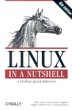
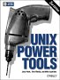

Alphabetical Directory of Linux Commands - O`Reilly
LinuxCommand.org - SuperMan pages
Linux Man pages - Searchable
GNU Bash Manual - gzip archives
TCP and UDP port numbers - wikipedia
Tutorials
Bash Guide for beginners - Machtelt Garrels
Greg Wooledge Bash FAQ
The Linix Documentation Project
The Linux Cookbook - Tips and Techniques
Justlinux.com - Newbie help pages
bash tips - Configure the bash terminal
Bash pitfalls - GreyCat's wiki
IBM DeveloperWorks - Linux Technical library
Linux cheat sheet (PDF) - Anthony Barker
Linux Shell Scripting Tutorial - LSST
Unix/Linux/BSD Toolbox - concise summary of commands
Advanced Bash-Scripting Guide - Mendel Cooper
Administration shell scripts - Dawid Michalczyk
grymoire.com - Advanced stuff
Speaking UNIX - Tutorials from IBM
Shell-fu - Daily tips
LinuxCommand - Shell Scripting tutorial
UbuntuForums - HowTo guides and forum
Using the Ubuntu command line - Simple introduction
UbuntuGuide - In depth guide to Ubuntu
UNIX FAQ
Recommended Books
 Linux in a Nutshell 6th Edition, Sept 2009
A command reference for Linux, find the command syntax you need. Also UNIX in a Nutshell, Fourth edition (2008) by Arnold Robbins
the standard desktop reference.
Essential System Administration, Third Edition Aug 2002 by Æleen Frisch
Describes Unix tools in the context of a system administrator's job. More than just covering syntax, tools and concepts, this book shows how to use administrative tools intelligently and efficiently.Linux Commands, Editors, and Shell Programming
by Mark G. Sobell
Effectively two books in one - a tutorial on concepts and techniques, plus a command reference.
Clear explanations and useful knowledge.
965 pages
Ubuntu Kung Fu: Tips, Tricks, Hints, and Hacks by Kier Thomas
Entertaining and readable with hundreds of concise tips. Enhance productivity, tweak Ubuntu performance, enhance security, and lots more. UNIX Power Tools by Jerry D Peak, Tim O'Reilly et al
Useful tricks and techniques, each chapter describes the different ways of performing a task. e.g. the page on 'Wildcards' has 10 ways to select a group of files - only two of which involve the grep command. [Archive of shell scripts]
1200 pagesUnix Shell Programming, Third Edition (Paperback)
by Stephen Kochan, Patrick Wood
Detailed coverage of shell programming: regular expressions, the kernel and utilities.
OS Downloads
Bash V3.0 released July 2004
wubi - Ubuntu installer for Windows
Solaris 10 from Sun (free)
Gentoo.org
RedHat Linux
Linux.Dell.com (Red Hat)
Novell linux
Live CDs & Wikipedia Live CDs
Ubuntu.com
Ubuntu Dust Theme - a new, look for Ubuntu Lucid Lynx.
Apps & Utilities
Freshmeat.net - Huge open source download site
GNU FTP Sites - GNU programs and Manuals
pc-tools.net - Utilities (Linux/BSD)
Ack - better than grep- a grep-like tool, aimed at programmers.
Audacity - CD Ripper, Sound editor
AutoFsck - Configure boot disc checks (Ubuntu)
Beagle - Desktop Search
Dar - Disk Archive/backup
Evolution - email with Exchange compatibility
AntiWord - Cross-platform MS Word reader.
thttpd - HTTP Web Server
ImgSeek - Photo collection manager and viewer
Easy Tag - Tag editor for MP3, Ogg Vorbis files
Filelight - Graphical view of the filesystem
Fanout - Run a command on multiple machines
GNU Parted | Partimage - partition managers
Gnome Do - App launcher (inspired by Quicksilver) includes Docky
Google command line - Script Youtube, Cal, docs, picasa etc
Grip - CD Ripper (Gnome)
Gftp multithreaded ftp
htop - an interactive process viewer
k3b.org - The CD/DVD Kreator
KNode newsreader - for K desktop
Inkscape - Vector Graphics (Illustrator)
Lame - audio apps
Macromedia Flash Player
Pan - Newsreader
Partition Image - Ghost
Performance monitoring tools: atop, bmon, dstat, htop, ifstat, iftop, sysstat
KMyFirewall Easy Firewall | Firewall Builder | Shoreline Firewall | GuardDog | Firestarter
Linux Security Auditing Tool
OCS Inventory - Open Source System Management
rDesktop - RDP client for Windows (Terminal Services)
xTraceroute - graphical version of traceroute
e2Undel - Undelete
VLC Media Player
MPlayer - DVD and media player
VNC
Xfce - Lightweight window manager
xmms - Winamp clone
Discussion & Newsgroups
comp.unix.shell - Shell scripting
comp.os.linux.* - General linux
Linux Questions.org
SS64 Discussion Forum
“Talk is cheap. Show me the code” - Linus Torvalds